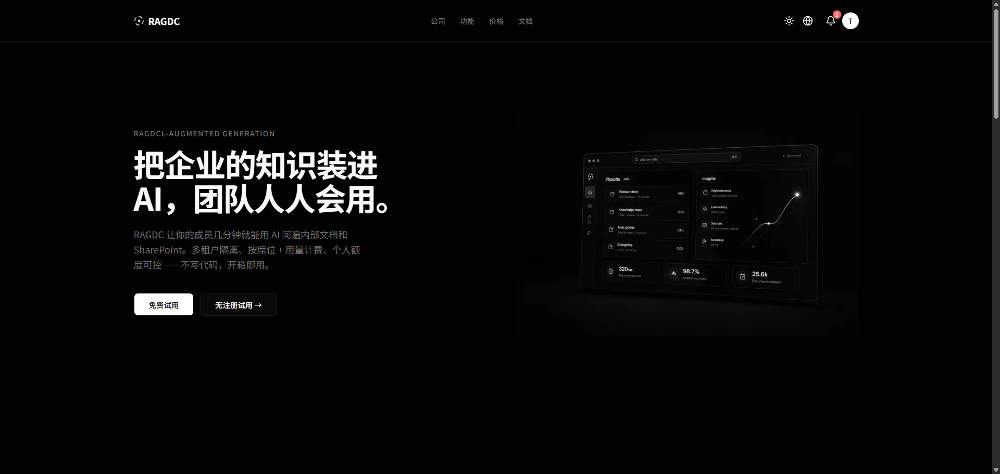
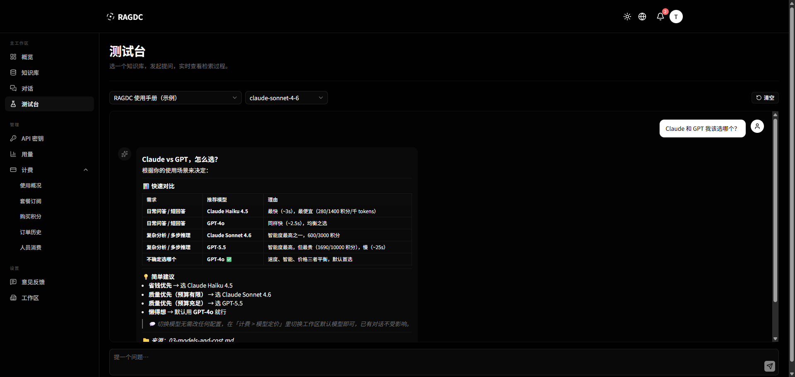
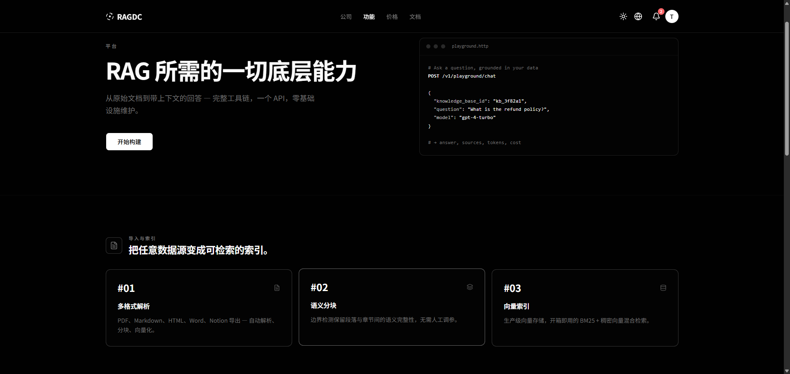
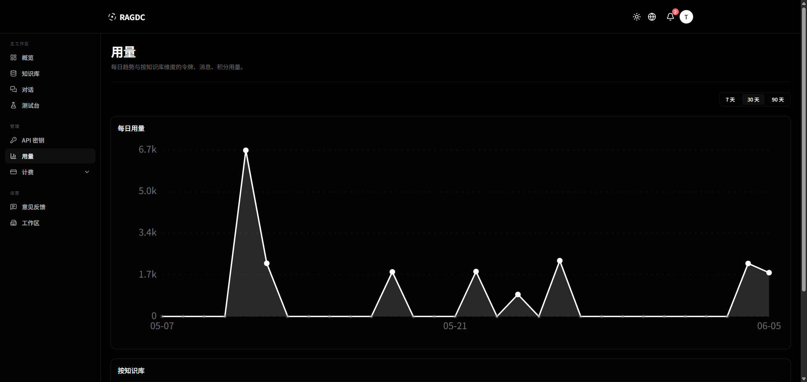
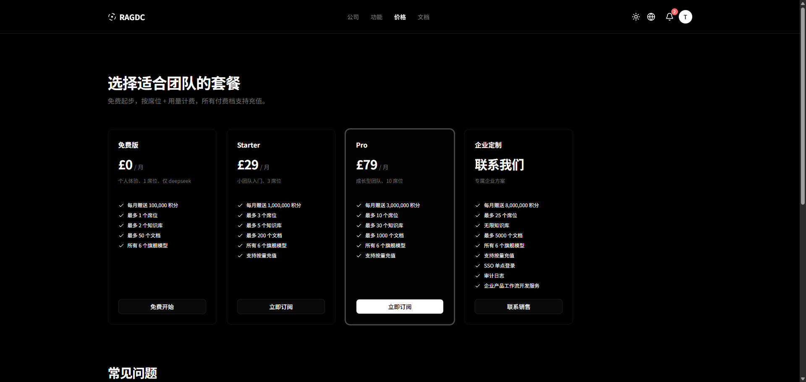
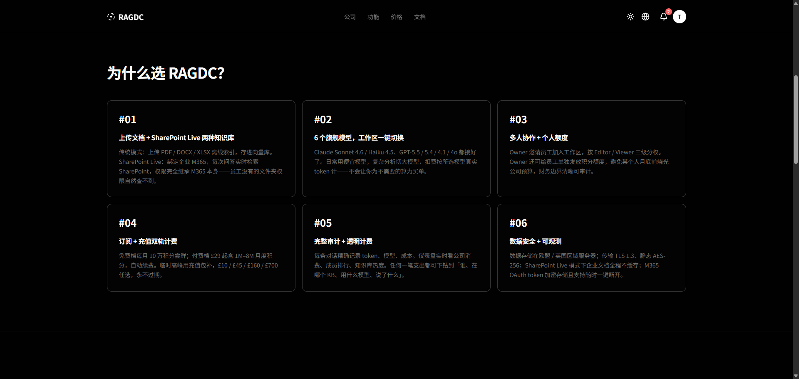

A freemium RAG platform with image-text hybrid retrieval and dual-market pricing (China + overseas). Built around bge-m3, Milvus, and a pluggable multi-provider LLM router. AIVAULT authors the Python AI service layer end-to-end.
带 图文混合检索 的 Freemium RAG 平台，面向国内 + 海外双市场定价。底层基于 bge-m3、Milvus，以及一个可插拔的多 provider LLM 路由。Python AI 服务层由 AIVAULT 端到端完成。
The product bet: most RAG offerings ship a single embedding model and a single LLM. This one lets teams hot-swap providers, blend text with image retrieval, and run the whole thing on their own compute when compliance demands it.
产品思路：多数 RAG 产品只配一个 embedding + 一个 LLM。这一套可以随时切换 provider、把文本和图像一起检索，在有合规要求时还能整套部署到客户自己的机器上。



POST /v1/playground/chat) turns raw documents into grounded answers, backed by a three-step ingest — multi-format parsing · semantic chunking · vector indexing (BM25 + dense hybrid).
RAG 所需的一切底层能力，做成平台。一个 API（POST /v1/playground/chat）把原始文档变成有据回答，背后是三步导入 —— 多格式解析 · 语义分块 · 向量索引（BM25 + 稠密向量混检）。


